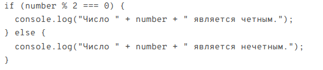
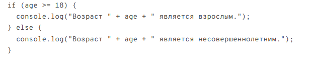

WEB-Учебник по Java Script
WEB-Учебник по Java Script
Создаем переменную для хранения значения числа let number = 7; Проверяем, является ли число четным
Создаем переменную для хранения значения возраста let age = 25; Проверяем, является ли возраст взрослым (от 18 лет)
 В данном коде мы используем условные операторы в JavaScript для проверки различных условий. Сначала мы создаем переменную number и присваиваем ей значение 7. Затем мы проверяем, является ли число четным с помощью оператора %, который возвращает остаток от деления. Если остаток от деления числа на 2 равен 0, то число является четным, и выводится соответствующее сообщение.
В противном случае, число является нечетным, и выводится соответствующее сообщение.Далее мы создаем переменную age и присваиваем ей значение 25. Затем мы проверяем, является ли возраст взрослым (18 лет и старше) с помощью оператора >=, который означает "больше или равно". Если возраст больше или равен 18, то он считается взрослым, и выводится соответствующее сообщение. В противном случае, возраст считается несовершеннолетним, и выводится соответствующее сообщение.